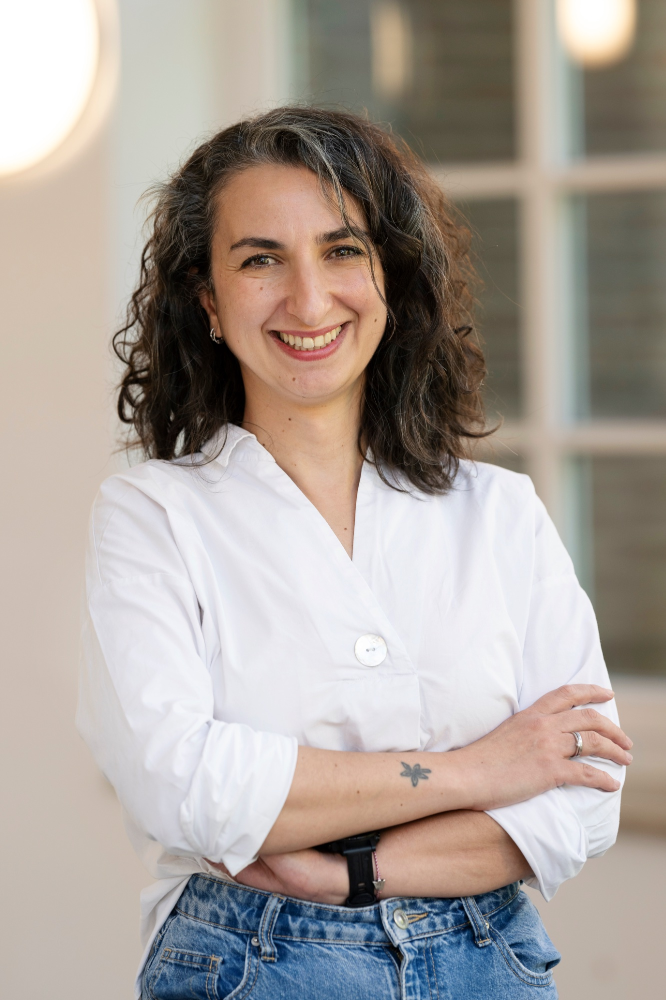
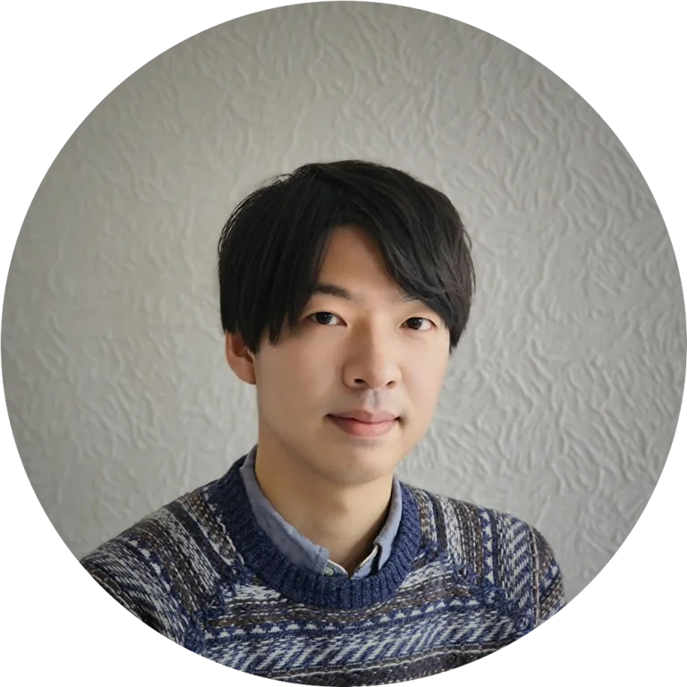
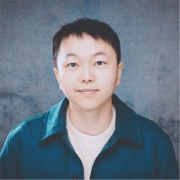
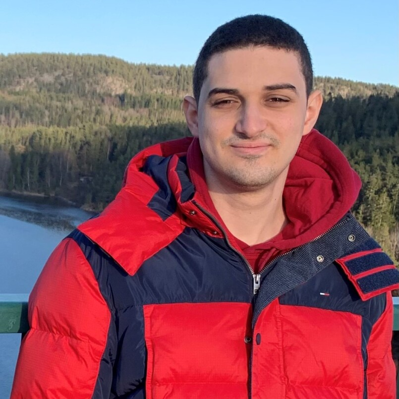

A half-day workshop on the tension between LLM fluency and OLM integrity.
The AIED community has for decades established why transparency, accuracy, and learner agency matter in educational AI. Open Learner Models (OLMs) give learners the ability to inspect, contest, and negotiate the system's representation of their knowledge — creating conditions for genuine metacognition and self-regulation.
Large Language Models now offer something seductive: rich, naturalistic explanations of learner states generated at low cost. One could simply feed a learner's interaction history into an LLM and let it answer "what do I struggle with?" or "what should I do next?" The LLM practically becomes the OLM.
But LLMs do not employ structured, inspectable representations. Their explanations can be fluent yet wrong, confident yet ungrounded. Allowing fluency to substitute for validity would undermine commitments the field has worked hard to establish.
This workshop surfaces that tension sharply — and works toward a research agenda for navigating it.
Three invited speakers each deliver a tight 5-minute position statement followed by 5 minutes of immediate reaction from the room. Statements are deliberately in tension: one arguing LLMs finally make OLMs scalable; one arguing LLM-mediated explanations threaten the core principle of inspectability; one asking whether any of this serves the people being modeled. The goal is not to resolve but to surface the tension sharply.
A workshop organizer presents foundational work in Learner Modeling and OLMs — empirical studies, system designs, theoretical frameworks — and approaches at the OLM–LLM intersection, to ground the audience in what is already being attempted and where gaps remain. Participants contribute short presentations of their own work.
Small groups (3–4 participants, mixed across career stage and background) receive a shared scenario: a learner interaction trace from a realistic educational context (programming task, collaborative discussion, or writing exercise). Each group designs how an LLM-enhanced OLM would explain the learner's state to three audiences — the learner, a teacher, and a peer — while explicitly addressing a constraint card of core OLM principles: accuracy, inspectability, learner agency, contestability. Groups then rotate to review each other's designs.
Organizers and participants map findings onto a shared board organized around three questions: What must an OLM preserve even when LLMs are involved? Where does LLM integration genuinely add value? What research does not yet exist? The board becomes a rough but collectively owned research agenda.
Each group nominates one "non-negotiable" principle for LLM-enhanced OLMs. The workshop closes by identifying two or three concrete follow-on actions: a position paper to co-author, a special issue to propose, or a follow-up workshop at a subsequent venue. Participants sign up for future actions before leaving.
"What are the requirements for an LLM-generated explanation of a learner's state to count as a genuinely open model?"
"How do we evaluate whether LLM-mediated OLMs are accurate, fair, and trusted by learners?"
"What safeguards are needed when natural language explanations can be fluent but wrong?"
"How might collaborative and group-level learner modeling change when LLMs mediate the representation?"

Head of COLAPS research group. Focuses on computational learning analytics, AIED, and educational technologies. Expert consultant on AI in Education for the Council of Europe; member of the IAIED Society Executive Board.

Tenure-Track Junior Professor of Technology-Enhanced Learning. Interdisciplinary research at the intersection of Learning Sciences and HCI. Ph.D. from Carnegie Mellon University; M.A. from Stanford University.
Distinguished Presidential Appointee at ETS. Research on open learner modeling, Bayesian student modeling, conversation-based and game-based assessment. Co-PI of NSF AI INVITE Institute.

PhD candidate in Human-Centered Computing and Cognitive Science. Research on computational representations of learning processes and AI-based models that bridge cognitive theory and implementation.

M.Sc. candidate in Computer Engineering. Research on how generative AI can support learners through transparent, interactive OLMs with a focus on negotiable learner models, agency, and metacognition.
Multidisciplinary team spanning
Learning Analytics · AIED
Learning Sciences · HCI
Computer Science · Assessment
The workshop targets researchers and practitioners in AIED, EDM, and L@S working on learning analytics, learner and user modeling, and educational technology. No technical prerequisite — designed to be productive for both system builders and educational researchers.
Register to Participate AIED 2026 Conference